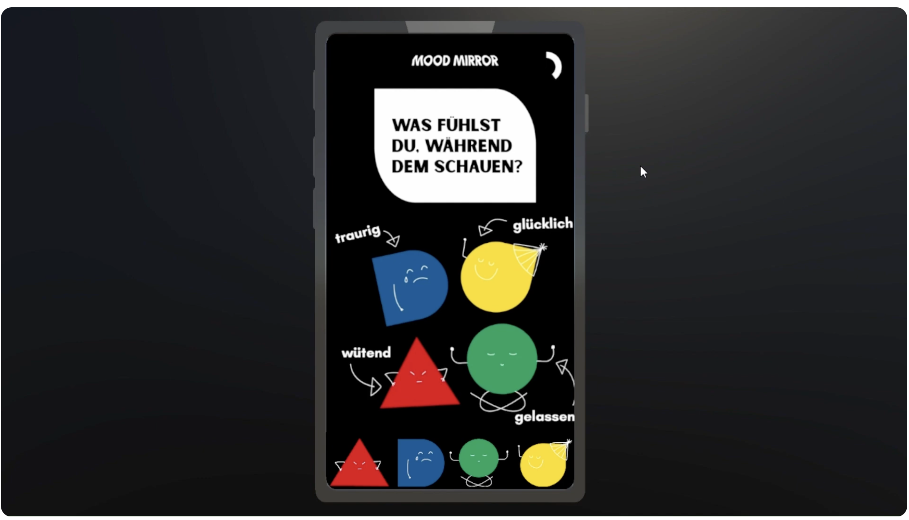
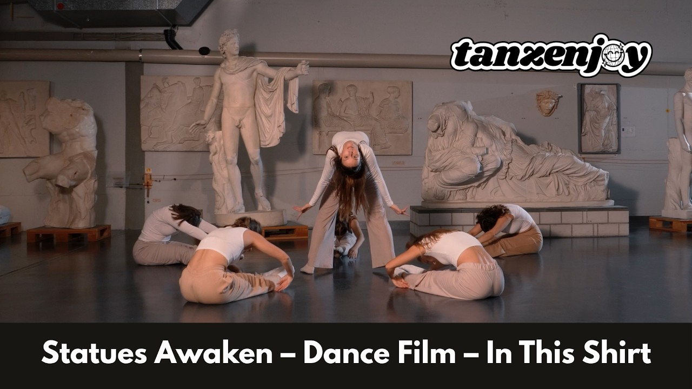
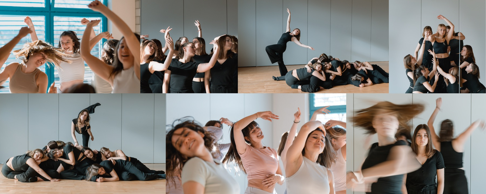
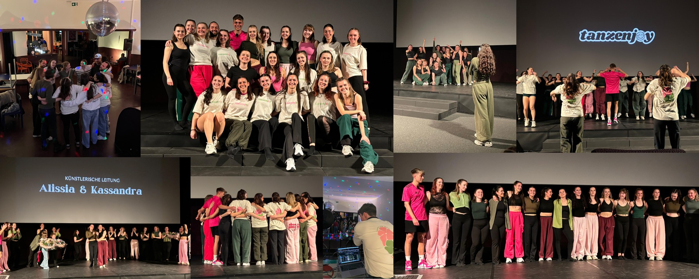
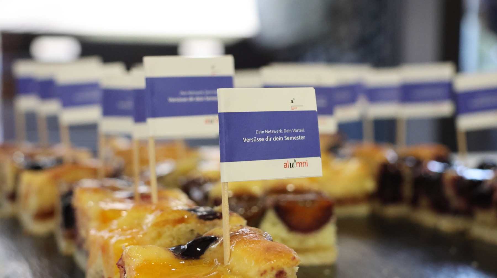
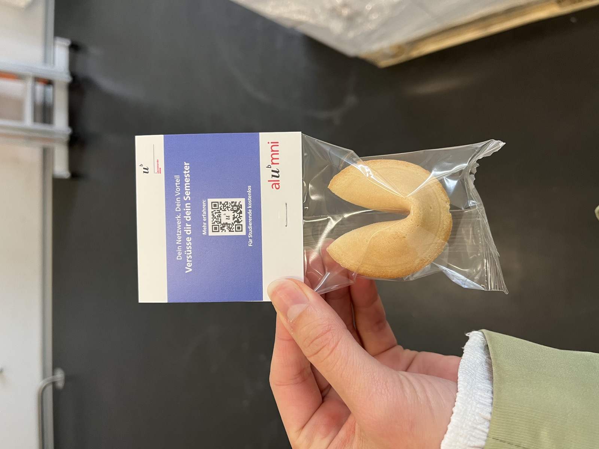
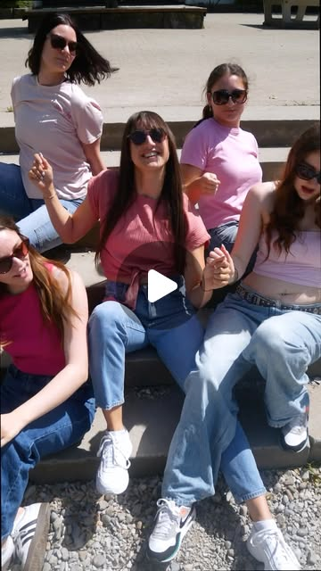
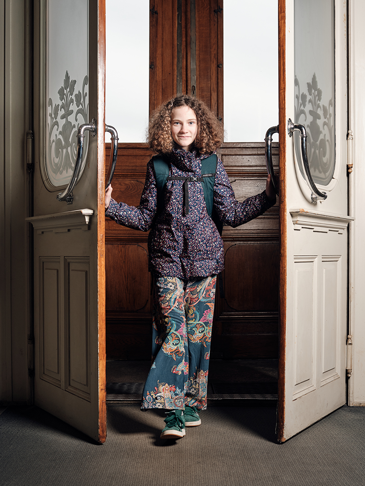
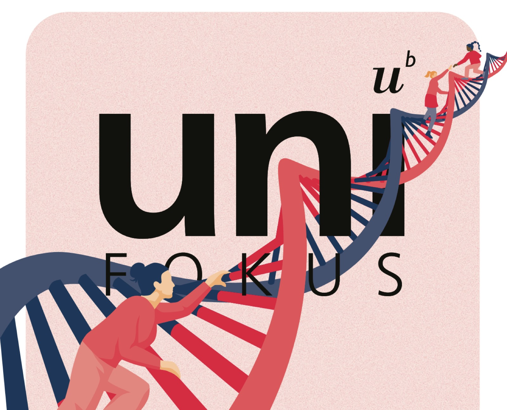

Alissia Haldemann
PORTFOLIO
Vom ersten Gedanken bis zur Umsetzung.
In Bildern, auf Bildschirmen und auf der Bühne.
Eine Auswahl
meiner Arbeiten.

01Design & AnimationMood Mirror
Projektdetails ein- oder ausklappen

Mood Mirror
Masterprojekt · Teamarbeit
Wie lassen sich Emotionen in einer digitalen Welt sichtbar machen? Im Team entwickelten wir dafür einen Game-Prototyp mit Unity.
Mein Beitrag
Ich entwickelte das visuelle Erscheinungsbild, gestaltete die Spielfiguren in Adobe Illustrator und animierte die Spiel-Tutorials in Adobe After Effects.
Das Ergebnis
Ein gemeinsam entwickelter Game-Prototyp mit einer von mir gestalteten visuellen Identität und animierten Tutorials.

Tanzfilm ↗02Regie & ChoreografieStatuen erwachen
Projektdetails ein- oder ausklappen

Tanzfilm ↗Statuen erwachen
Tanzenjoy · Videoprojekt
Nach einem Auftritt an der Museumsnacht entstand für meinen Verein Tanzenjoy ein eigenständiges Videoprojekt.
Mein Beitrag
Ich übernahm die Regie, entwickelte die Choreografie und stand selbst als Tänzerin vor der Kamera.
Das Ergebnis
Ein Tanzvideo, das die Choreografie in ein filmisches Format überträgt.

03Konzeption & EventleitungTanzshow
Projektdetails ein- oder ausklappen

Tanzshow
Tanzenjoy · Tanzshow
«Error 404 – Tanz nicht gefunden»: Eine Tanzshow, bei der kreative Konzeption und organisatorische Umsetzung zusammenkamen.
Mein Beitrag
Ich verantwortete die Gesamtleitung: von der Geschichte und den Choreografien über die Organisation der Trainings und der Location bis zur Afterparty.
Das Ergebnis
Eine umgesetzte Tanzshow mit einer gemeinsamen Geschichte und einem organisierten Rahmen für das Ensemble und das Publikum.


04Kampagne & GrafikEine süsse Verbindung
Projektdetails ein- oder ausklappen

Eine süsse Verbindung
Alumni UniBE · Praktikumsprojekt
Eine Aktion, um Studierende auf Alumni UniBE aufmerksam zu machen – mit einem greifbaren Anlass, das Netzwerk kennenzulernen.
Mein Beitrag
Ich setzte das Projekt von der Idee bis zur Umsetzung um: Konzept und Planung, Abklärung der Machbarkeit, Gestaltung der Grafiken und Bestellung der Artikel.
Das Ergebnis
Eine realisierte Akquiseaktion mit gestalteten Werbemitteln und Give-aways für Studierende.


Tanzvideo ↗05Videokonzept, Dreh & SchnittHot n Cold
Projektdetails ein- oder ausklappen

Tanzvideo ↗Hot n Cold
Tanzenjoy · Videoprojekt
Eine bestehende Choreografie einer Tanzenjoy-Choreografin wurde zum Ausgangspunkt für ein Videoprojekt.
Mein Beitrag
Ich entwickelte das Videokonzept in Abstimmung mit der Choreografin und setzte Dreh und Schnitt eigenständig um. Die Choreografie stammt von der Choreografin.
Das Ergebnis
Ein fertig umgesetztes Tanzvideo für Instagram.

Fotografie: Dres Hubacher06Bildredaktion & OrganisationFrauen in der Wissenschaft
Projektdetails ein- oder ausklappen

Fotografie: Dres HubacherFrauen in der Wissenschaft
Universität Bern · Bildstrecke
Eine Bildstrecke der Universität Bern, die Frauen in der Wissenschaft sichtbar macht. Entstanden in enger Zusammenarbeit mit dem Fotografen Dres Hubacher.
Mein Beitrag
Ich wirkte an der Ideenentwicklung mit, koordinierte die Personen und Locations für die Fotoshootings, führte vor Ort Gespräche und formulierte daraus die Zitate.
Das Ergebnis
Eine veröffentlichte Bildstrecke in Uniaktuell. Die Fotografien stammen von Dres Hubacher; mein Beitrag lag in der Konzeption, Organisation und Textarbeit.

07TextredaktionJournalistisches Schreiben
Textauswahl ein- oder ausklappen

Journalistisches Schreiben
Universität Bern · Online & Print
Eine Auswahl meiner journalistischen Arbeiten für die Universität Bern: Online-Artikel für Uniaktuell und fünf Kurztexte für das Printmagazin uniFOKUS.
Von mir verfasst
- 2024 · AntikensammlungAntike Schätze im Industriecharme (öffnet in einem neuen Tab)
- 2025 · Geschichte des ChorlebensWie Männerchöre die Schweiz vereinten (öffnet in einem neuen Tab)
- 2025 · uniFOKUS · Printmagazin · PDFFünf Kurztexte: Sie gestalten Wissenschaft mit Weitblick (PDF öffnet in einem neuen Tab)
Ein Projekt anklicken, um mehr über die Idee und meinen Beitrag zu erfahren.
Kreativer Kopf.
Mit Blick fürs Ganze.
Ich bin Alissia. Ich verbinde kreative Ideen mit einem effizienten Umgang mit digitalen Tools.
Am liebsten arbeite ich dort, wo Menschen und ein sozialer Auftrag im Mittelpunkt stehen. Aktuell studiere ich im Master Digital Communication and Creative Media Production und arbeite als Assistentin im Eventmanagement und Marketing.